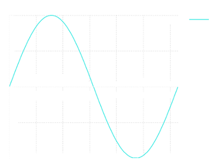

The Riemann integral
L'integrale definito è un numero che nel caso particolare di funzioni positive può essere assunto come misura dell'area del trapezoide (o sottografico) T individuato dalla funzione, ma la cui definizione può essere estesa al caso generale di funzioni qualunque (in questo caso perdendo l'interpretazione geometria). L'integrale di Riemann, ad opera del matematico tedesco Georg Friedrich Bernhard Riemann (1826 - 1866), prende le mosse dal metodo di Esaustione.
T = {(x,y) ∈ ℝ2 | (x ∈ [a,b]) ∧(0 ≤y ≤ f(x)}
Si chiama trapezoide, perché se f(x) è una funzione lineare, la regione si riduce ad un trapezio. The following example illustrates the procedure
Example. Si consideri un segmento parabolico, vale a dire la parte A del piano determinata dall'asse delle ascisse, dalla retta x = b e dalla parabola di equazione y = x2, from 0 to b. Si suddivida l'intervallo [0,b] in n intervalli uguali, ciascuno di ampiezza h = b/n e si considerino i rettangoli che hanno come base tali intervalli e altezza pari al massimo valore assunto da f(x) = x2 in tale intervallo. L'area complessiva di questi rettangoli è
Si considerino ora i rettangoli che hanno la stessa base dei precedenti ma altezza pari al minimo di f = x2 nell'intervallo; la loro area complessiva è
Al tendere di n all'infinito Sn e sn tendono allo stesso limite b3/3, il quale potrà allora essere assunto come "area" della regione A. ■
Dire che f è integrabile nel senso di Riemann (abbr. R-integrabile) significa che è possibile inscrivere e circoscrivere il trapezoide di f, mediante pluri-rettangoli, unione di un numero finito di rettangoli con i lati paralleli agli assi coordinati, in modo che la differenza tra le aree dei pluri-rettangoli inscritti e circoscritti si possa rendere piccola ad arbitrio. Per essere più precisi: scomponiamo l'interballo base [a,b] in un numero finito di sottointervalli, inserendo dei punti tra a e b
x0 = a, x1, x2, ..., xn = b
Una suddivisione di questo tipo viene detta partizione di [a,b] negli n sottointervalli [x0, x1], ..., [xn − 1, xn]. Dove x0 < x1 < x2, ...., xn = b. Possiamo assocuare due funzioni costanti a tratti, per k = 1, ...,m n
che sono rispettivamente minorante e maggiorante di f:
f1 ≤ f(x) ≤ f2(x), ∀x ∈ [a,b]
e si costruicano le due somme
La funzione f è R-integrabile se gli insiemi numerici costituiti dalle somme inferiori e dalle somme superiori sono contigui, cioè per ogni ε > 0 è possibile trovare una somma superiore ed una somma inferiore la cui differenza è minore di ε.
Let's consider the problem of calculating the area under the grapf of the function y = x2 for x ∈[0,1]. We divide up the inteval [0, 1] in n equal subintervals
Approssimiamo l'area sottesa la curva, con la somma delle aree dei rettangoli:

For n ⟶ ∞ we obtain
The area is thus 1/3.
Proviamo a generalizzare questo procedimento a qualsiasi funzione, considerando una funzione continua, f: [a, b] ⟶ ℝ. Effettuiamo la partizione dell'intervallo di definizione, in n intervallini, i cui estremi sono individuati dai punti
a = x0, x1, x2, ..., xn−1, xn = b
with
xi = a + ih, h = (b − a)/h, i = 0, ..., n
inside each of the n intervals [xi−1, xi] we pick an arbitrary point ξ ∈ [xn−1, xi]. We define the sum of Cauchy-Riemann, as
Passando al limite per n tendente ad infinito si passa da una somma ad un integrale:
Teorema 4.2. Given a continuos function f: [a, b] ⟶ ℝ, there exists finite the limit of Sn, indipendently by ξi, called definite integral of f on [a, b] expressed as:
If, as we let the number of partions tend to ∞, the partial sum Sn tends to a limit, then we say the function f is Riemann integrable (integrable, hereafter) on [a, b] and the limit to which the partials sums converge is known as the integral of f over [a,b].
A definition of Area
The Riemann integral permits a precise definition of the geometrical concept of "area" under a curve and not viceversa.
Reconsidering the Cauchy-Riemann sum (6.3). Let f ≥ 0 a continuos function on [a,b]. Over each subinterval [xi−1, xi] whose height is the value of f(ξ) with ξ a selected point in the subinterval. The sum Sn is an approximation of the area between the graph of f and the x-axis, in the interval a > x > b. This region is known as trapezoid.
limn ⟶ ∞ Sn = ∫ba f(x) dx = area of the trapezoid
When f has no fixed sign, the integral measures the difference of the positive regions (above the x-axis) and the negative regions (below it). Consider for example sin(x):
because of symmetry we have:
Length of a Curve
Another important geometrical concept associated with a curve leads to an integration. This is the lenght of arc.
Let y = f(x) a continuous function and f'(x) its interval in the interval [a, b]. An increment dx along the x-axis corresponds to an increment dy = f' dx along the y-axis. Then we have
Summing up along all of the infinitesimal distances along the entire length of the curve: